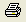

Score Model Characteristics
- Less than or equal to $2,000 per month
- Between $2,000 and $4,500 per month
- Greater than $4,500 per month
These bins are rule conditions that should be configured so that the value for each characteristic can only fall into one bin. The Score Model Properties page, where you define models and their characteristics, provides an All Other bin for each characteristic as a catch-all to ensure that all possible values are covered.
The toolbar in the Characteristic section of the Score Model Properties page provides the following commands for creating and editing characteristics and their bins.
| Icon Name | Description |
|---|---|
| Add a characteristic to a score model | |

|
Add a bin to a characteristic |
| Add a range to a characteristic | |
| Move a characteristic or bin up a row | |
| Move a characteristic or bin down a row | |
| Delete a characteristic from a score model | |
| Validate all values in the score model | |
|  | Print the score model information |
Using these commands, you can define a new score model, add characteristics to the score model, add bins to the characteristics, and validate all values used in the score model.
You can resize the columns in the characteristic and bin rows by placing your cursor over the column heading divider, holding down the left mouse button, and dragging the mouse to the right or left.
Values that are explicitly accounted for in model development may still be unexpected at runtime; you may want to flag these unexpected values and track their occurrence over time. Do this by selecting the Unexpected check box provided next to each bin. A high frequency of occurrences of unexpected values may warrant the redevelopment of the score model. Furthermore, if data values for several model characteristics fall into an unexpected range, the resulting score may be invalid. FICO recommends that you test score models fully before putting them into production.